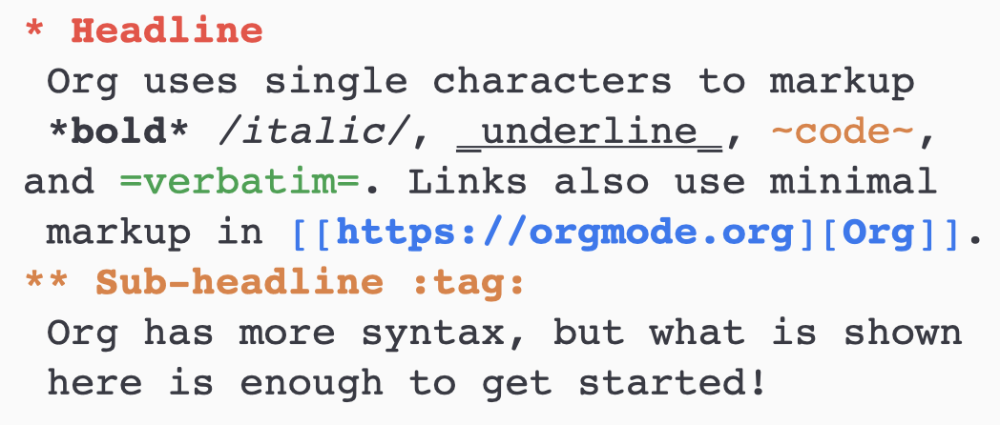

Org-mode#
What is Org-mode#
Org-mode is a GNU Emacs major mode for keeping notes, doing literate programming, maintaining to-do lists, planning projects and more, just by using an effective plain text syntax.
Having a specific syntax and working on plain text files, on the surface Org-mode can be considered just a markup language, but being a major mode for the Emacs text editor, its features allow much more than only formatting the appearance of a text. Here we’ll examine some of them.
Markup basics#
As Markdown and reStructured Text, Org’s syntax is straightforward and hence classifiable as a lightweight markup language. The following is an example of the basic markup.
Smart editing#
The fundamental structure of an Org document is a tree, with nested, collapsible sections. You can fold and unfold whole trees with a single tab keystroke.

Org also provides tags to let you find your content in a faster and effective way.
Computational notebook#
Org files can be used also as computational notebooks, providing a complete literate programming environment. Org babel supports a growing number of programming languages. An example of how you can test a snippet of code is the following:

Exportation and publishing#
With proper libraries, you can export .org documents in a series of formats. Some of them are:
HTML;
LaTeX;
Markdown.
Among these, Org only loads libraries for HTML and LaTeX by default. Additional libraries can be loaded in either of two ways: by configuring the org-export-backends variable, or by requiring libraries in the Emacs init file. For example, to load the Markdown library, add this to your Emacs config file and restart Emacs:
(require 'ox-md)
A third-part library to export files in reStructured Text can be downloaded here.